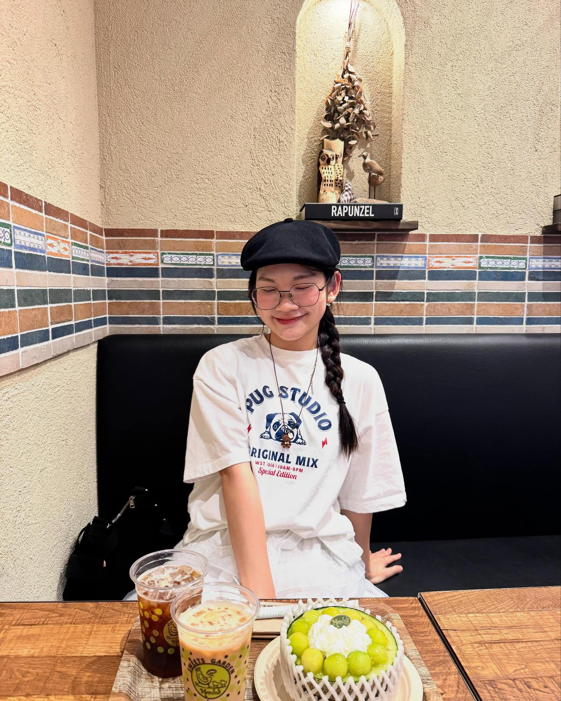

About Me

KHANH-VINH NGUYEN is a master’s student in Information Science at the Japan Advanced Institute of Science and Technology (JAIST), Ishikawa, Japan, under the supervision of Professor Kiyoaki Shirai. She is also a member of Shirai’s laboratory researching Natural Language Processing and Sentiment Analysis.
She received her bachelor’s degree in Information Technology from the National Economics University, Hanoi, Vietnam, in 2022. From 2020 to 2023, she worked as a Web Developer at Giaohangtietkiem JSC, Vietnam. After graduating, she was a Teaching Assistant at the VNU University of Engineering and Technology in Hanoi, Vietnam, and also a Research Assistant in the Data Science and Knowledge Technology Laboratory.
She published a journal Q1 as a main author and 4 papers at international conferences like the Asian Conference on Intelligent Information and Database Systems (ACIIDS) and the International Conference on Knowledge and Systems Engineering (KSE). During the summer of 2024, she interned at The Asian Institute of Digital Finance (AIDF), an institute at the National University of Singapore (NUS). Now she works in Shirai’s laboratory and deeply focuses on Text Summarization and Sentiment Analysis.
Ms. Vinh was a mentor of the Math and Science Summer Program Vietnam in 2024. She also participated as an organizer at the Comparative Opinion Mining shared task of Vietnamese Language and Speech Processing 2023.
In her free time, she enjoys traveling and dancing hip-hop.
Now she’s seeking opportunities for a PhD program. Feel free to contact khanhvinh.work@gmail.com for inquiries and collaborations.
Thanks for visiting this site and have a nice day 🥰.
Publication
Contact Me
Email: khanhvinh.work@gmail.com
LinkedIn: [Nguyen-Khanh Vinh]
Instagram: [Nguyen-Khanh Vinh]
Github: [Nguyen-Khanh Vinh]